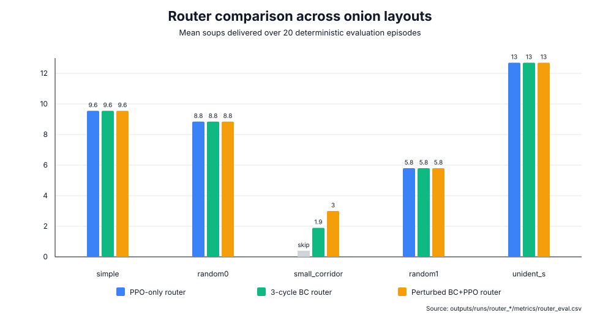
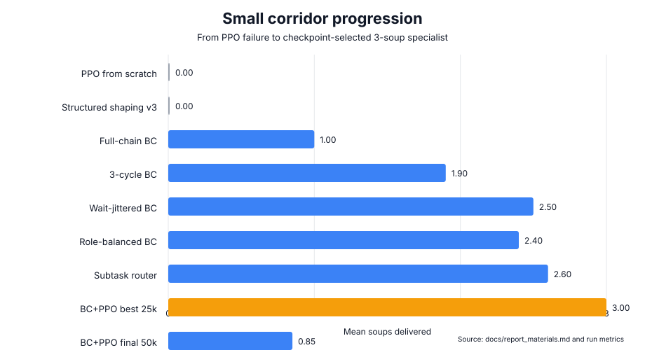
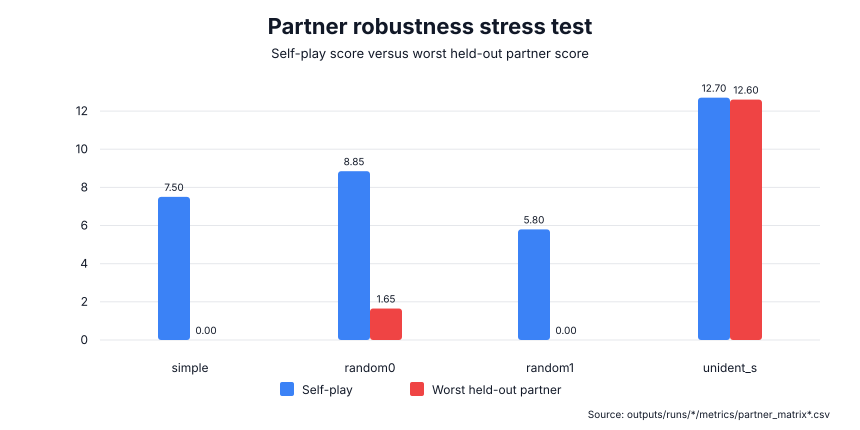

基于 Specialist Router 的 Overcooked 双智能体协作策略研究
更新时间：2026-06-28
摘要
本项目研究两个智能体在 Overcooked 环境中的协作学习问题。我们以 Stable-Baselines3 PPO 为基础算法，通过 PantheonRL simultaneous-agent wrapper 同时训练两个智能体，并以每局交付汤数作为主要评价指标。实验表明，默认 reward shaping 可以让 PPO 在简单地图 simple 上学习到有效协作策略；但纯 sparse reward、zero-shot 跨地图迁移、朴素多地图混训都无法形成可靠的跨地图能力。
在后续阶段，我们转向 single-layout specialist 和 layout router。每张地图训练独立专家，再由 router 按 layout name 选择对应策略。该方法在 simple、random0、random1、unident_s 上获得稳定非零结果。对于最困难的 small_corridor，PPO 从零训练和多种 reward shaping 均失败；通过 scripted full-chain behavior cloning、multi-cycle demonstrations、wait-perturbed demonstrations 以及 checkpoint-selected PPO fine-tuning，最终将该地图提升到 3.00 soups。最终最强 router 在五个 onion layouts 上达到平均 7.98 soups，最低 3.00 soups。
核心结论是：在当前环境栈和训练预算下，最有效的方案不是期待单一 PPO 策略自然泛化到所有地图，而是把跨地图能力建模为 specialist composition / policy selection 问题。同时，partner robustness 和 checkpoint selection 是必须显式评估的关键风险。
1. 问题设置
Overcooked 是一个完全合作式多智能体任务。两个智能体需要在有限步数内分工完成拿洋葱、放锅、等待烹饪、拿盘、取汤、上菜等子任务。每成功交付一份汤得到 sparse reward 20，因此本文使用：
soups delivered = sparse reward / 20作为主指标。默认评估设置为 20 个 deterministic episodes，每局 horizon 为 400 steps。
本文关注七个问题：
- PPO baseline 能否在简单地图上学会合作。
- Reward shaping 对学习是否必要。
- 单地图策略能否 zero-shot 泛化到其他地图。
- 朴素多地图混训能否解决泛化问题。
- Specialist + router 能否形成更强的实用方案。
small_corridor这类困难地图是否能通过 imitation / curriculum 解决。- 自博弈成功是否意味着对不同 partner 鲁棒。
2. 方法
2.1 PPO Baseline
基础算法为 PPO。每个 layout 中训练 ego 和 partner 两个策略，评估时使用 deterministic action。主要脚本如下：
scripts/train.shscripts/evaluate.shscripts/evaluate_matrix.shscripts/record_demo.sh
主要 baseline 配置为 configs/baseline_simple.json。
2.2 Reward Shaping 消融
我们比较三种简单地图设置：
| Run | 设置 | 目的 |
|---|---|---|
no_shaping_simple | 关闭 shaping | 检验 sparse-only 学习难度 |
baseline_simple | 默认 shaping | 建立可靠 PPO baseline |
distance_shaping_simple | 默认 shaping + distance reward | 检验额外距离奖励是否有帮助 |
2.3 Specialist 与 Router
Zero-shot 和朴素多地图训练失败后，我们将跨地图问题改写为 specialist composition：每张目标地图训练一个 specialist，再由 router 按 layout 选择 run。
Router 相关代码：
src/overcooked_project/evaluate_router.pyscripts/evaluate_router.shconfigs/router_simple_random0.json
该方案不声称单个神经策略具备跨地图泛化能力，而是衡量“专家组合”在当前项目预算下能达到的实用上界。
2.4 Behavior Cloning 与 Small Corridor Curriculum
small_corridor 是项目中最困难的 onion layout。PPO 从零训练、多种结构化 shaping、delivery warm-start PPO 都无法从标准开局完成上菜。因此我们逐步引入监督轨迹：
- Delivery demos：只学习最后送汤段。
- Full-chain demos：从标准开局完成一份汤。
- 3-cycle full-chain demos：连续完成三份汤。
- Wait-jittered 3-cycle demos：在安全同步点加入随机等待扰动。
- 从 perturbed BC 初始化 PPO，并选择 25k best checkpoint。
关键脚本：
scripts/collect_delivery_demos.shscripts/train_delivery_bc.shscripts/train_curriculum.sh
3. 实验结果
3.1 PPO Baseline 与 Reward Shaping
| Run | Layout | Mean soups | Mean sparse reward | 结论 |
|---|---|---|---|---|
no_shaping_simple | simple | 0.00 | 0.0 | Sparse-only 在当前预算下失败。 |
baseline_simple | simple | 7.50 | 150.0 | 默认 shaping 能学到可用协作。 |
distance_shaping_simple | simple | 7.50 | 150.0 | 测试的 distance shaping 没有超过默认 shaping。 |
结论：reward shaping 对 PPO 学习是必要的，但简单叠加距离奖励并不自动提升最终 sparse performance。
3.2 Zero-Shot 与 Multi-Layout 失败
baseline_simple 在 simple 上可达到 7.50 soups，但迁移到 harder layouts 后基本没有 sparse reward。
| Layout | Mean soups |
|---|---|
simple | 7.50 |
small_corridor | 0.00 |
random0 | 0.00 |
random1 | 0.00 |
unident_s | 0.00 sparse |
朴素多地图 curriculum 也没有解决问题，甚至会损伤 simple 上的能力。这说明当前任务的跨地图泛化不能依赖简单训练分布混合。
3.3 Specialist 与 Router
单地图 specialist 可以解决多个困难地图：
| Specialist | Layout | Mean soups | Mean sparse reward |
|---|---|---|---|
curriculum_simple_random0 | simple | 9.55 | 191.0 |
baseline_random0_long_seed52 | random0 | 8.85 | 177.0 |
baseline_random1 | random1 | 5.80 | 116.0 |
baseline_unident_s | unident_s | 12.70 | 254.0 |

三组 router 对比如下：
| Router | simple | random0 | small_corridor | random1 | unident_s | Average | Minimum |
|---|---|---|---|---|---|---|---|
| PPO-only onion router | 9.55 | 8.85 | skipped | 5.80 | 12.70 | 9.23 | 5.80 |
With 3-cycle BC small_corridor | 9.55 | 8.85 | 1.90 | 5.80 | 12.70 | 7.76 | 1.90 |
With perturbed BC+PPO small_corridor | 9.55 | 8.85 | 3.00 | 5.80 | 12.70 | 7.98 | 3.00 |
当前最强结果是 checkpoint-selected perturbed BC+PPO small_corridor specialist 加入后的五地图 router，平均 7.98 soups，最低 3.00 soups。
3.4 Small Corridor Case Study

small_corridor 的优化过程如下：
| Run | Mean soups | Mean sparse reward | 解释 |
|---|---|---|---|
baseline_small_corridor | 0.00 | 0.0 | PPO 从零失败。 |
small_corridor_structured_shaping_v3 | 0.00 | 0.0 | 能到 soup pickup，但不能上菜。 |
small_corridor_delivery_bc_from_v3 standard start | 0.00 | 0.0 | Delivery-only BC 太窄。 |
small_corridor_full_chain_bc_from_v3 | 1.00 | 20.0 | 一份汤 full-chain BC 成功。 |
small_corridor_full_chain_3cycle_bc_from_v3 | 1.90 | 38.0 | 多轮 BC 有提升但不稳定。 |
small_corridor_full_chain_3cycle_jitter3_bc_from_v3 | 2.50 | 50.0 | 等待扰动提升鲁棒性。 |
small_corridor_full_chain_3cycle_jitter3_role_balanced_bc_from_v3 | 2.40 | 48.0 | 合并 p0/p1 角色数据训练两个模型，没有超过固定分工 BC。 |
small_corridor_subtask_router_jitter_bc_delivery | 2.60 | 52.0 | soup-held 时切换到 delivery BC，对 BC-only 有小幅帮助。 |
small_corridor_subtask_router_best_bc_ppo_delivery | 2.45 | 49.0 | 同样切换会破坏 checkpoint-selected BC+PPO 闭环。 |
small_corridor_full_chain_3cycle_jitter3_bc_ppo_finetune best at 25k | 3.00 | 60.0 | 20/20 局达到 3 soups。 |
small_corridor_full_chain_3cycle_jitter3_bc_ppo_finetune final 50k | 0.85 | 17.0 | 过训练后崩溃。 |
这说明 small_corridor 的难点不只是 reward coefficient 不合适，而是长时序探索和多子任务衔接困难。Scripted demonstrations 提供了可学习的动作链，wait jitter 让 BC 不再只记住精确时钟。简单地把两名玩家的角色数据合并给两个模型并没有继续提升表现，说明瓶颈不只是固定角色数据量不足。手写 subtask router 可以对 BC-only 末端送餐略微补救，但会破坏已经 fine-tune 好的 BC+PPO 闭环。PPO fine-tuning 在 25k checkpoint 进一步稳定策略，但 50k final 崩溃，说明 checkpoint selection 是必要的。
3.5 Partner Robustness

自博弈成功不代表 partner 泛化成功：
| Layout / ego | Self-play soups | Held-out partner soups | 解释 |
|---|---|---|---|
simple baseline ego | 7.50 | 5.60 with seed11, 0.00 with seed12 | 简单地图也有 partner overfitting。 |
random0 long specialists | 6.30 to 8.85 | 1.65 to 7.70 | 跨 partner 不对称。 |
random1 specialists | 5.20 to 5.80 | 0.00 to 1.10 across held-out partners | 自博弈成功但跨 partner 崩溃。 |
partner_diversity_random1 | 2.25 to 4.55 with two training partners | 0.45 with held-out seed72, 1.10 with held-out seed73 | Seen partners 上更稳，但没有解决真正 held-out 泛化。 |
partner_diversity_random1_three_partners | 0.65 to 4.90 with three training partners | 1.00 with held-out seed73 | Seen-partner minimum 提高，但四伙伴平均没有超过 two-partner run。 |
partner_diversity_random1_three_partners_selfplay_mix | 0.10 with learned alt.zip | 0.05 to 1.85 across four fixed partners | 固定 partner + learned partner 混合训练效果更差，是负结果。 |
unident_s specialists | 12.60 to 12.70 | 12.60 to 12.65 | 两个 seed 间较鲁棒。 |
因此，报告中不能只展示 self-play 分数。每个声称鲁棒的 specialist 都需要 cross-play 或 held-out partner 证据。
4. Demo 与 Artifact
推荐展示 GIF：
| Demo | Path | 用途 |
|---|---|---|
| Default PPO baseline | demo.gif | 展示 simple baseline 成功。 |
| Sparse reward failure | demo.gif | 展示 sparse-only 失败。 |
| Naive multi-layout failure | simple_demo.gif | 展示朴素混训问题。 |
random0 specialist | random0_long_demo.gif | 展示 hard-layout specialist。 |
random1 specialist | random1_demo.gif | 展示另一张 hard layout。 |
unident_s specialist | unident_s_demo.gif | 展示最强 specialist。 |
Best small_corridor specialist | small_corridor_full_chain_3cycle_jitter3_bc_ppo_best_demo.gif | 展示最终 small_corridor 成功。 |
{kind=link}
{kind=link}
{kind=link}
{kind=link}
{kind=link}
{kind=link}
{kind=link}
核心数据路径：
- 完整实验日志：
docs/experiment_log.md - 报告材料：
docs/report_materials.md - 最强 router：
outputs/runs/router_onion_layouts_with_small_corridor_jitter3_bc_ppo/metrics/router_eval.csv small_corridorbest/final checkpoint：outputs/runs/small_corridor_full_chain_3cycle_jitter3_bc_ppo_finetune/metrics/train_summary.json- Partner matrix：
outputs/runs/*/metrics/partner_matrix*.csv
5. 局限性
- 当前最强方案是 specialist router，不是单一神经策略的跨地图泛化。
small_corridor的成功依赖 scripted demonstrations 和 checkpoint selection，不能表述为 PPO 从零探索成功。random1在 held-out partner 下明显崩溃；两 partner 和三 partner 的 partner-aware training 都只改善部分 seen partners，mixed fixed + learned partner 版本更差，仍不足以解决 held-out 泛化。- Tomato layouts 当前因
KeyError: 'tomato'没有纳入主结果，应作为环境栈问题单独说明。 - PPO fine-tuning 可能非单调，最终 checkpoint 不一定代表最佳策略。
6. 结论
本项目展示了一条从基础 PPO baseline 到 specialist router 的完整 MARL 实验链条。默认 shaping 的 PPO 能在 simple 上学到合作，但 sparse-only、zero-shot 和朴素多地图训练都失败。通过训练单地图 specialist 并使用 layout router，我们在多个困难 onion layouts 上获得了稳定表现。对于最困难的 small_corridor，我们通过 full-chain BC、多轮 demonstrations、wait perturbation 和 checkpoint-selected PPO fine-tuning，最终达到 3.00 soups。
因此，本项目的核心结论是：在当前 Overcooked 设置下，跨地图能力更适合通过 specialist composition 和 policy selection 实现；如果进一步追求统一策略或更强泛化，需要引入 layout-conditioned policy、distillation、partner-conditioned policy，或 MAPPO/HAPPO/HARL 式异质多智能体训练。
7. 后续工作
- 最终提交前按课程模板补充课程、队伍、姓名和学号等元信息。
- 继续研究
random1partner robustness；当前 3-partner fixed-pool 和 mixed fixed + learned partner run 都没有真正修复 held-out partner 崩溃，下一步应考虑 partner-conditioned 或 HARL/MAPPO/HAPPO 风格算法。 - 设计 learned option routing 或更结构化的
small_corridorpickup/delivery controller，而不是只做手写 held-soup switch。 - 尝试 distillation，把 router specialists 蒸馏成统一策略。
- 单独修复 tomato layout 的 featurizer 问题。